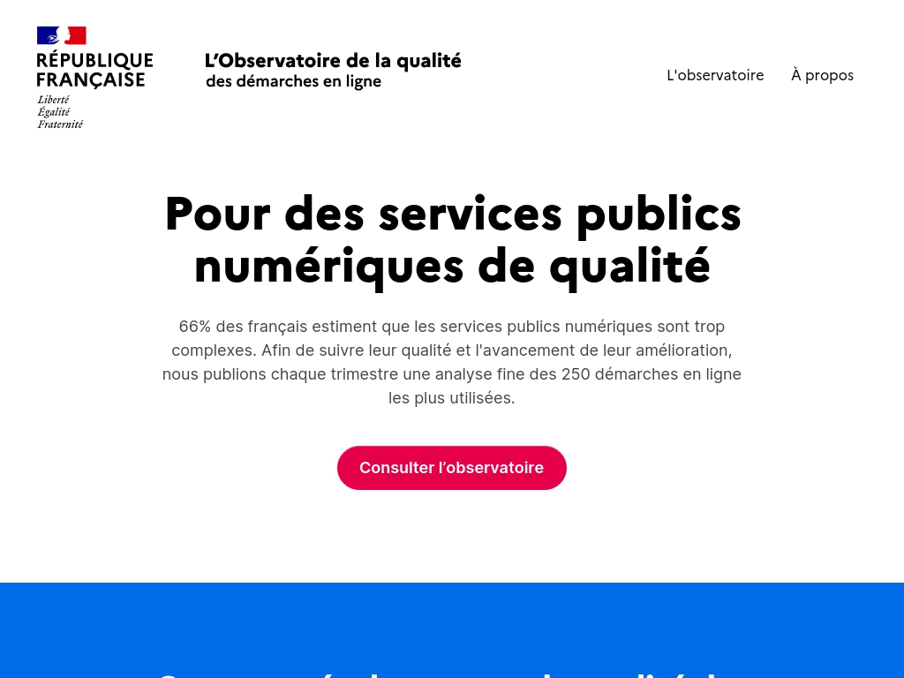
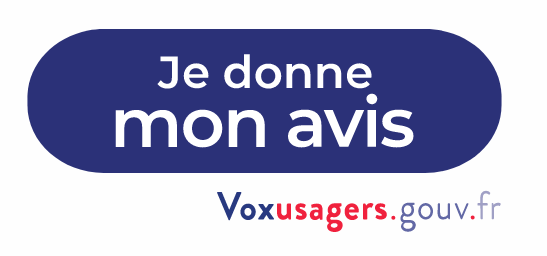

Analyse et Optimisation des Services Numériques : Une Approche Basée sur la Satisfaction des Usagers



Je donne mon avis
Dans un contexte de transformation numérique accélérée, la Direction Interministérielle du Numérique (DINUM) lance un projet ambitieux visant à évaluer et améliorer la qualité des services numériques offerts aux citoyens. L'initiative vise à répondre à l'objectif gouvernemental d'accroître la dématérialisation des démarches administratives tout en mettant l'accent sur la simplicité d'utilisation pour les usagers.
Ce projet se concrétise à travers deux axes majeurs : la mise en place d'un observatoire dédié à la qualité des services numériques et le déploiement d'un dispositif de recueil de la satisfaction des usagers. Ces deux piliers s'articulent autour d'une solution de Business Intelligence, permettant une analyse approfondie des données recueillies pour orienter les actions d'amélioration.
L'observatoire fournira des données chiffrées et partagées pour les 250 démarches administratives clés de l'État, couvrant des aspects tels que l'état d'avancement de la dématérialisation, la qualité du support, l'accessibilité sur smartphone, la disponibilité, le temps de réponse, et bien plus encore. Ces indicateurs cruciaux seront présentés de manière interactive à travers un tableau de bord sophistiqué.
Le dispositif de recueil de la satisfaction des usagers, symbolisé par le bouton "Je donne mon avis", sera déployé à la fin de chaque démarche administrative en ligne. Cette approche directe et participative permettra de capturer les retours utilisateurs, alimentant ainsi une évaluation précise de l'indice de satisfaction des usagers.
Ce projet s'inscrit dans une démarche d'amélioration continue, visant à identifier les points bloquants des démarches dématérialisées pour les optimiser et les rendre encore plus accessibles et efficaces pour les citoyens. La transparence des résultats et l'implication des parties prenantes seront des éléments clés de cette initiative, garantissant une prise de décision éclairée et une évolution constante des services numériques offerts par l'État.
Élaboration de la stratégie du projet :
▼
-Définition claire des objectifs : amélioration de la qualité des services numériques, identification des points bloquants et optimisation des démarches dématérialisées.
-identification des parties prenantes, y compris les utilisateurs finaux, les équipes opérationnelles et les responsables hiérarchiques.
-Établissement d'un calendrier de mise en œuvre du projet.
Choix de la solution Business Intelligence :
▼
-Sélection d'une solution BI adaptée aux besoins, capable de traiter des volumes de données importants, de générer des tableaux de bord interactifs et de fournir des analyses approfondies.
-Vérification de la compatibilité de la solution avec les différentes sources de données à intégrer.
Mise en place du dispositif de recueil de données :
▼
-Développement d'un mécanisme pour recueillir les données sur l'état d'avancement de la dématérialisation, les critères de qualité et les retours des utilisateurs.
-Intégration du bouton "Je donne mon avis" à la fin de chaque démarche administrative en ligne.
Collecte et stockage des données :
▼
-Mise en place d'une infrastructure de collecte et de stockage des données, respectant les normes de sécurité et de confidentialité.
-Vérification de la structure et de la conformité des données collectées aux besoins de l'analyse.
Développement du tableau de bord BI :
▼
-Conception et développement d'un tableau de bord interactif présentant les données de manière claire et accessible.
-Intégration d'indicateurs clés de performance (KPI) liés à l'état d'avancement de la dématérialisation, la qualité des services et l'indice de satisfaction des usagers.
Analyse des données :
▼
-Utilisation de la solution BI pour analyser les données recueillies et identification des tendances, des points bloquants et des opportunités d'amélioration.
-Implication des équipes opérationnelles dans l'interprétation des résultats pour une compréhension approfondie.
Communication des résultats :
▼
-Préparation de rapports périodiques présentant les conclusions de l'analyse des données.
-Partage des résultats avec les parties prenantes et les équipes concernées pour favoriser la transparence et la collaboration.
Mise en œuvre des améliorations :
▼
-Utilisation des résultats de l'analyse pour mettre en place des actions correctives et des améliorations continues.
-Surveillance de l'évolution des indicateurs de performance au fil du temps.
Évaluation continue :
▼
-Évaluation régulière de l'efficacité des mesures mises en place.
-Préparation à ajuster l'approche en fonction des retours d'expérience et des évolutions des besoins.